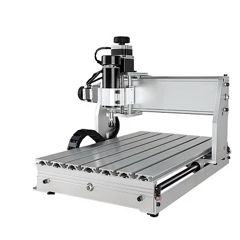
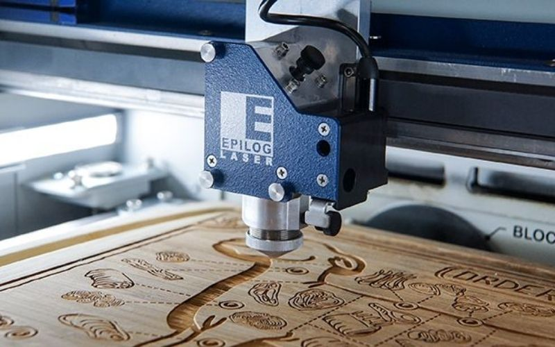
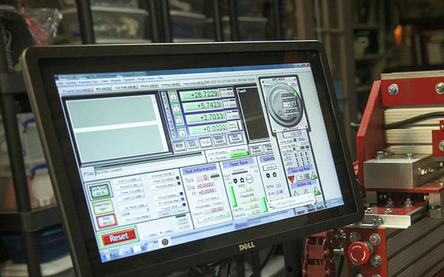

¿Que es una Impresora CNC?
Una impresora CNC, o máquina de control numérico computarizado (CNC), es unaMáquina que utiliza un ordenador para controlar el movimiento de herramientas de corte o grabado y dar forma a materiales como metal, madera o plástico.. A diferencia de las impresoras 3D que construyen objetos capa por capa, las máquinas CNC eliminan material de un bloque sólido para crear la forma deseada.
En detalle:

¿Como ayuda una CNC al mundo?
Las impresoras CNC, o máquinas de Control Numérico por Computadora, son herramientas versátiles que benefician al mundo de diversas maneras. Su precisión y capacidad para trabajar con diversos materiales las hacen valiosas en múltiples industrias, desde la aeroespacial hasta la médica. Además, su automatización y eficiencia contribuyen a la reducción de costos y a la optimización de la producción.
Alguno de sus beneficios clave son:
Precision y exactitud
Reducion de costos
Mayor eficiencia y productividad
Versatilidad
Adaptabilidad a diseños complejos
Aplicaciones en diversas industrias
Reduccion de reciduos
Innovacion y desarrollo
Seguridad
Colaboracion con otras tecnologias
Desventajas principales de una CNC
Las principales desventajas de las impresoras CNC, también conocidas como máquinas de control numérico computarizado, incluyenel alto costo inicial, la necesidad de capacitación especializada, y la posibilidad de pérdida de habilidades manuales. Además, pueden surgir problemas de mantenimiento y, en algunos casos, la automatización puede llevar a la despersonalización del trabajo.
Desglosando sus desventajas
Alto costo inicial
Necesidad de capacitacion
Posible pérdida de habilidades manuales
Mantenimiento
Despersonalización del trabajo
Riesgo de errores
Costos de mantenimiento
Dependencia tecnológica
¿Como funciona una maquina CNC?
Una impresora CNC, o máquina de control numérico por computadora, funcionainterpretando diseños digitales creados con software CAD/CAM y transformándolos en movimientos precisos de una herramienta de corte o un cabezal sobre una pieza de trabajo. Este proceso implica la conversión de datos digitales en señales eléctricas que controlan motores, los cuales a su vez mueven la herramienta o el cabezal a lo largo de los ejes X, Y y Z.

Diseño CAD:
Se crea un diseño 3D de la pieza utilizando software de diseño asistido por computadora (CAD).
Generacion de codigo G:
El diseño CAD se traduce en código G, un lenguaje de programación que indica a la máquina CNC cómo moverse y realizar cortes.
Carga del programa:
El código G se carga en la máquina CNC, que lo interpreta y lo convierte en señales eléctricas.
Movimiento de la herramienta:
Las señales eléctricas controlan los motores que mueven la herramienta de corte (como una fresa, un láser o una boquilla de impresión 3D) a lo largo de los ejes X, Y y Z.
Procesamiento de la pieza:
La herramienta de corte se desplaza según el código G, eliminando material o añadiéndolo (en el caso de impresión 3D) para crear la forma deseada.
Control preciso:
Los sistemas CNC permiten un control preciso de la velocidad, la posición y la trayectoria de la herramienta, lo que resulta en piezas de alta precisión y acabados finos.
¿Como esta formada la maquina CNC?
Una impresora CNC, o máquina de control numérico computarizado, está formada por varios componentes claves que trabajan en conjunto para realizar trabajos de mecanizado precisos. Estos componentes incluyenun controlador CNC, un sistema de accionamiento, la máquina herramienta en sí, un dispositivo de entrada y un sistema de retroalimentación(en algunos casos).
Componentes de una maquina CNC
Controlador CNC:
Es el "cerebro" de la máquina, interpreta las instrucciones del programa informático y las traduce en señales para los motores que controlan los movimientos de la máquina.
 Sistema de accionamiento:
Sistema de accionamiento:
Está compuesto por motores (generalmente servomotores ) y otros mecanismos que transmiten el movimiento al eje de la máquina, permitiendo el desplazamiento preciso de la herramienta o la pieza de trabajo.
 Herramienta de maquina:
Herramienta de maquina:
Es la parte física de la máquina, donde se realiza el corte, grabado u otro proceso deseado. Incluye elementos como guías lineales, husillos, herramientas de corte, etc.
 Dispositivo de entrada:
Dispositivo de entrada:
Permite al usuario introducir las instrucciones o el programa a la máquina, generalmente un ordenador con software de diseño asistido por computadora (CAD) y código G.

Sistema de retroalimentacion:
En máquinas CNC más avanzadas, este sistema utiliza sensores para monitorear la posición de la herramienta y corregir cualquier desviación del programa, asegurando una mayor precisión.

Ademas la maquina CNC puede incluir:
Estructura de la maquina
Mesa de trabajo
Herramientas de corte
Panel de control
Planos de la Maquina CNC
Estructura